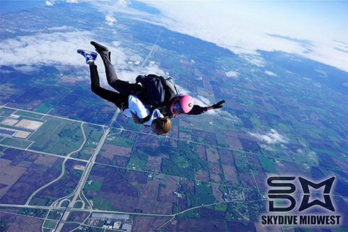
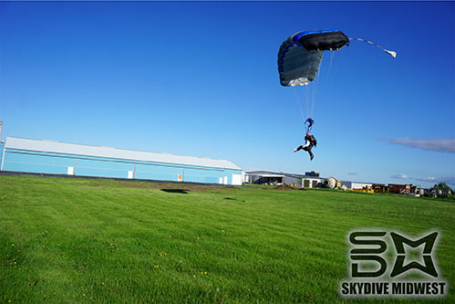

My Expereince with Skydiving
Disclaimer
Here's a couple of the dangers I found most compelling:
- The parachutes might not deploy at all.
- The company is not responsible for employee negligence.
- The harness can snap/break at any given moment.
Getting Ready
In order to prepare for your first jump, you are required to go to a mini "school" session, usually done just a few minutes to hours before taking off in the plane. The instructor is one of the emplyees who have been trained to jump.
Following a short speech, you're put on a short video from the compnay that goes over the whole process, along with what to do and what not to do. A few waivers are signed after which you are to wait in the lobby for the perfect conditoins in the sky. The sky needs to be perfectly clear to jump.
When the sky is clear and it is time to jump, your party gets called over after which you are put into a harness and secured by the instructor.
In the Air
One you're all hooked up, everyone boards the plane and very shortly you elevate to an altitude of 14,500 feet, from where you jump. The pilot send a signal and the doors open. From thier your assigned instructor walks up to the edge, carrying you, getting ready to jump in a specifc interval.
Freefalling
Following the jump on the plane is the very first stage of the actual dive. You as well as the instructor will fall almost straight down. It is a really fast fall and a lot of air hits you all at once. It is important to maintain the initial jumping position as mentioned in the instructional video.
The image above portrays the position you are to hold as you and the instructor fall down through the sky.
Parachute Deployment
Pretty far up in the sky, after freefalling, it becomes time to deploy the parachute. The instructor pulls the parachute deployment string and the parachute forms. For redundancy, there are three parachutes in the case that some of them fail. After deployment, the floating part (calmest part) allows you to take the time to look around you, as you make your way to the ground.
Landing
The final stage of the skydiving process is the landing part. When the you are close enough to the ground the instructor will give you instructions on what do do in order to land safely.
A few steps for a safe landing include:
- Stay focused.
- Kick your legs up and hold them straight (body makes an L shape).
- Touch the ground when your instructor says it is safe to so.
The final position should look like the following:
